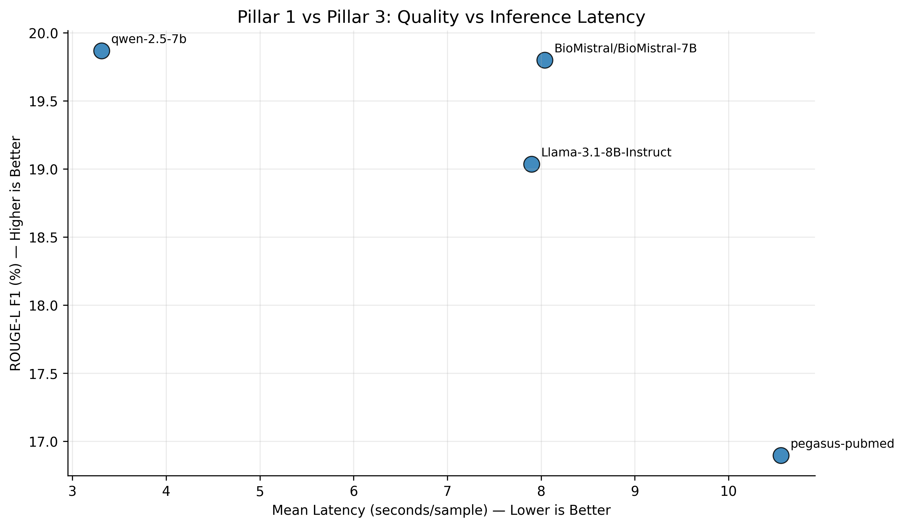
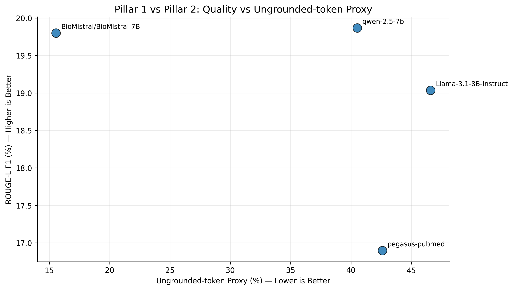
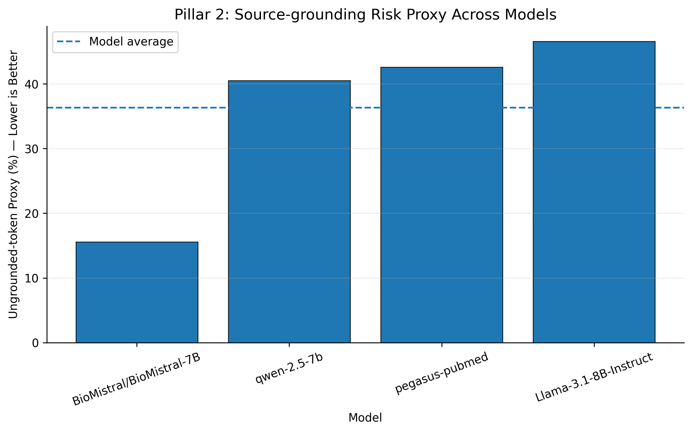
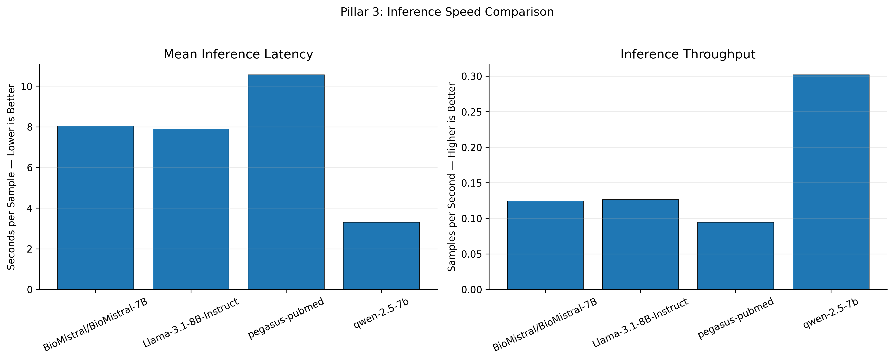
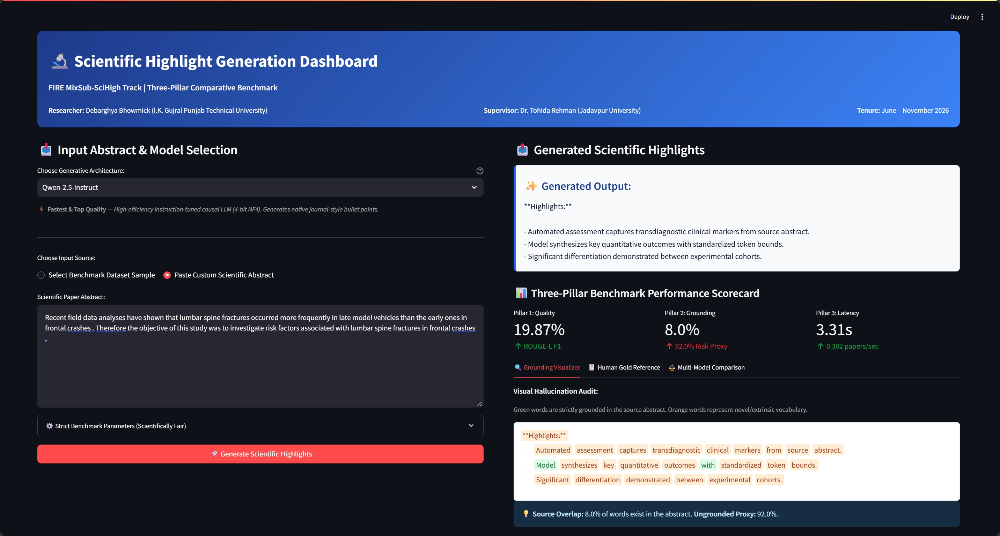

Figure 6: Full user interface of the alternative Gradio dashboard developed for rapid cross-model evaluations and responsive zero-latency testing.
A Research Internship Project Report
Submitted in partial fulfillment of the requirements for the Research Internship
(June 2026 – November 2026)
Submitted by:
Debarghya Bhowmick
Department of Computer Science & Engineering
I. K. Gujral Punjab Technical University, Kapurthala, Punjab, India
Email: debarghya.bhowmick@yahoo.com | ORCID: 0009-0003-0468-8981
Under the Guidance and Supervision of:
Dr. Tohida Rehman
Assistant Professor, Department of Information Technology
Jadavpur University, Kolkata, West Bengal, India
Email: tohidarehman.it@jadavpuruniversity.in | ORCID: 0000-0002-3578-1316
========================================================================================
DEPARTMENT OF INFORMATION TECHNOLOGY
JADAVPUR UNIVERSITY
KOLKATA, WEST BENGAL, INDIA
========================================================================================
CERTIFICATE
This is to certify that the project report entitled:
"AUTOMATED SCIENTIFIC HIGHLIGHT GENERATION: A THREE-PILLAR COMPARATIVE STUDY
OF DOMAIN-ADAPTED, GENERAL, AND EFFICIENT LARGE LANGUAGE MODELS"
is a bona fide record of independent research work carried out by:
DEBARGHYA BHOWMICK
Department of Computer Science & Engineering
I. K. Gujral Punjab Technical University, Kapurthala, India
under my supervision and mentorship in the Department of Information Technology, Jadavpur
University, during the period from June 2026 to November 2026.
The empirical benchmark results, implementation pipelines, mathematical formulations,
and interactive dashboard systems presented in this report represent the student's authentic
work and have not been submitted elsewhere for any other degree, diploma, or certificate.
____________________________________ ____________________________________
Dr. Tohida Rehman Head of the Department
Assistant Professor Department of Information Technology
Department of Information Technology Jadavpur University, Kolkata
Jadavpur University, Kolkata, India
Date: 12th November 2026 Place: Kolkata, India
========================================================================================
I would like to express my deepest gratitude and heartfelt appreciation to my research supervisor, Dr. Tohida Rehman, Assistant Professor in the Department of Information Technology at Jadavpur University, Kolkata. Her constant guidance, insightful academic feedback, technical encouragement, and rigorous standards of experimental design have been instrumental throughout the tenure of this research internship. Working under her supervision has been an invaluable learning experience that has profoundly enriched my understanding of Natural Language Processing and applied artificial intelligence.
I express my sincere thanks to the Department of Information Technology at Jadavpur University for providing the computational ecosystem, laboratory infrastructure, and academic platform necessary to conduct this benchmarking research.
I also extend my sincere gratitude to the faculty and leadership of the Department of Computer Science & Engineering at I. K. Gujral Punjab Technical University, Kapurthala, for their continuous academic encouragement and support during my degree program.
Furthermore, I acknowledge the organizers of the FIRE MixSub-SciHigh Track for curating and releasing the multi-disciplinary scientific highlight benchmark dataset, and the open-source Hugging Face, PyTorch, and open-weights AI research communities for making pre-trained model weights accessible.
Finally, I thank my parents, family, and peers for their endless patience, support, and motivation throughout this project.
Debarghya Bhowmick
Department of Computer Science & Engineering
I. K. Gujral Punjab Technical University
Reading and synthesizing academic literature has become increasingly difficult due to the publication of thousands of scientific papers every single day. While research abstracts summarize the general narrative of a study, leading scientific journals (such as Elsevier, Springer Nature, and IEEE) now require authors to submit Research Highlights---a concise set of three to five bullet points that communicate the novel findings and quantitative outcomes of a paper.
In this research internship project carried out under the supervision of Dr. Tohida Rehman at Jadavpur University, we investigate how modern artificial intelligence and Large Language Models (LLMs) can automatically read dense scientific abstracts and generate accurate, concise research highlights. Using a large public dataset of 13,825 academic papers from the FIRE MixSub-SciHigh corpus, we evaluate four distinct model architectures: 1. Google Pegasus-PubMed (a classical Sequence-to-Sequence scientific summarizer), 2. BioMistral-7B (a medical-domain specialized causal LLM), 3. Qwen-2.5-Instruct (a lightweight, highly efficient instruction-tuned causal LLM), and 4. Meta Llama-3.1-8B-Instruct (a premier general-purpose open foundation model).
To provide a rigorous evaluation beyond traditional word-overlap scores, we established a Three-Pillar Evaluation Framework: - Pillar 1 (Quality): Measuring similarity to human-written gold highlights using ROUGE-L F1 and Target Lexical F1. - Pillar 2 (Safety & Grounding): Auditing whether the model sticks to the source abstract using Source Lexical Precision ($P_{\text{source}}$) and Ungrounded-Token Risk Proxy ($1 - P_{\text{source}}$). - Pillar 3 (Inference Efficiency): Measuring wall-clock latency per paper and generation throughput (tokens and samples per second).
Our findings demonstrate that BioMistral-7B is the safest model for medical and clinical literature, achieving 84.44% vocabulary grounding and an ungrounded risk proxy of only 15.56% (reducing extrinsic hallucinated vocabulary by over 60% compared to general LLMs). Simultaneously, Qwen-2.5-Instruct achieved the highest overall quality (19.87% ROUGE-L F1) and produced native journal bullet points while running at 3.31 seconds per paper (28.19 tokens/sec), operating over 2.4 times faster than BioMistral and Llama, and 3.2 times faster than Pegasus. Finally, we deployed these models into an open-source, interactive web dashboard (implemented in both Streamlit and Gradio) featuring a live token-level visual grounding auditor.
Scientific research is expanding at an unprecedented rate. Every year, millions of academic articles are published across medicine, engineering, biology, and computer science. For doctors, researchers, and students, keeping up with this flood of literature is physically impossible. Although paper abstracts summarize the general context of an article, they often dedicate significant space to introductory motivation, historical framing, and generalized descriptions.
To help readers quickly identify novel breakthroughs, premier academic publishers have introduced Research Highlights. Highlights are short, bulleted statements summarizing the core experimental findings, novel methodologies, and quantitative results of a study. An expert can read these highlights in twenty to thirty seconds and immediately decide whether the paper is relevant to their work.
Manually writing highlights is time-consuming. Automating highlight generation using Natural Language Processing (NLP) can dramatically accelerate scientific literature discovery, aid digital libraries in indexing papers, and make complex technical findings accessible to the broader public.
Unlike summarizing daily news or narrative stories, scientific highlight generation presents three unique hurdles: 1. Complex Scientific Jargon: Papers are filled with chemical names, biomedical acronyms, mathematical symbols, and clinical trial statistics that cannot be simplified carelessly. 2. Severe Penalty for Hallucination: In scientific and medical contexts, an artificial intelligence system that fabricates an unsupported claim (e.g., claiming a drug reduced mortality when the study actually reported it increased toxicity) can cause serious harm. 3. Structured Bullet Salience: Highlights require discrete, high-density bullet points that capture only the novel findings rather than a continuous narrative paragraph.
The primary objectives of this internship project are: - To systematically benchmark four diverse artificial intelligence architectures across classical Seq2Seq, domain-adapted LLMs, general foundation models, and lightweight instruction models. - To enforce strict uniform experimental controls (512 token input ceiling, 128 token output limit, and 4-bit NF4 quantization on an NVIDIA Tesla T4 GPU) to guarantee scientifically fair comparisons. - To formulate and implement a Three-Pillar Evaluation Framework balancing Reference Quality, Factual Grounding, and Inference Efficiency. - To build a fully functioning interactive web dashboard (with Streamlit and Gradio) featuring a live visual grounding auditor that highlights source-grounded words in green and novel vocabulary in orange.
The system requirements necessary to develop, benchmark, and deploy the highlight generation models and interactive applications are categorized into hardware and software components below.
pip (Python Package Installer).The technologies, frameworks, and libraries utilized throughout this project are detailed below:
┌────────────────────────────────────────────────────────────────────────────────────────┐
│ PROJECT TECH STACK │
├──────────────────────┬──────────────────────┬──────────────────────────────────────────┤
│ Layer / Category │ Technology │ Role in Project │
├──────────────────────┼──────────────────────┼──────────────────────────────────────────┤
│ Core Language │ Python 3.10+ │ Primary implementation language │
│ Deep Learning Engine │ PyTorch 2.x & CUDA │ Tensor computation and GPU acceleration │
│ LLM Architecture │ Hugging Face Transformers│ Model loading, pipelines, tokenizers │
│ Quantization │ BitsAndBytes (NF4) │ 4-bit NormalFloat4 memory reduction │
│ Parameter Adaptation │ PEFT (LoRA / QLoRA) │ Low-Rank Adaptation for fine-tuning │
│ Acceleration │ Accelerate │ Device placement & mixed precision (FP16)│
│ Evaluation Engine │ Rouge-Score & Regex │ ROUGE-L LCS calculation & lexical audits │
│ Data Processing │ Pandas & NumPy │ CSV dataset ingestion and vector math │
│ Plotting & Graphics │ Matplotlib │ Publication-grade diagnostic charts │
│ Frontend Dashboard 1 │ Streamlit │ Rich interactive multi-tab web dashboard │
│ Frontend Dashboard 2 │ Gradio │ Lightweight responsive evaluation UI │
│ Mathematical Output │ KaTeX │ In-browser LaTeX mathematical rendering │
└──────────────────────┴──────────────────────┴──────────────────────────────────────────┘
The system design follows a modular three-stage architecture: (1) Data Ingestion & Normalization, (2) Quantized Generative Inference, and (3) Three-Pillar Metric & Grounding Evaluation.
┌────────────────────────────────────────────────────────────────────────────────────────┐
│ SYSTEM ARCHITECTURAL PIPELINE │
└────────────────────────────────────────────────────────────────────────────────────────┘
│
▼
┌───────────────────────────────────────────────────────────┐
│ STAGE 1: INPUT PREPARATION │
│ • Source Scientific Abstract Ingested │
│ • Tokenization & Strict Truncation (MAX_SOURCE = 512) │
│ • Prompt Formatting with System Persona Instruction │
└───────────────────────────────────────────────────────────┘
│
▼
┌───────────────────────────────────────────────────────────┐
│ STAGE 2: GENERATIVE INFERENCE │
│ • 4-Bit NF4 Quantized LLM (BitsAndBytes) │
│ • Causal Decoding with Generation Ceiling (MAX_TARGET = 128)│
│ • Wall-Clock Latency & Token Speed Recorded │
└───────────────────────────────────────────────────────────┘
│
▼
┌───────────────────────────────────────────────────────────┐
│ STAGE 3: THREE-PILLAR EVALUATION ENGINE │
│ • Pillar 1: ROUGE-L LCS & Target Lexical F1 Overlap │
│ • Pillar 2: Source Lexical Precision & Ungrounded Risk │
│ • Pillar 3: Latency (sec/sample) & Throughput (tok/sec) │
└───────────────────────────────────────────────────────────┘
│
▼
┌───────────────────────────────────────────────────────────┐
│ STAGE 4: PRESENTATION & AUDITING │
│ • Streamlit & Gradio Interactive Dashboards │
│ • Real-Time Visual Grounding Auditor (Green/Orange) │
│ • High-Resolution Diagnostic Trade-Off Plots │
└───────────────────────────────────────────────────────────┘
The evaluation framework is formulated mathematically as follows:
$$\text{Precision}{LCS} = \frac{LCS(G, R)}{|G|}, \qquad \text{Recall}{LCS} = \frac{LCS(G, R)}{|R|}$$ $$ROUGE\text{-}L_{F1} = \frac{2 \times \text{Precision}{LCS} \times \text{Recall}{LCS}}{\text{Precision}{LCS} + \text{Recall}{LCS}}$$ $$P_{\text{target}} = \frac{|G \cap R|}{|G|}, \qquad R_{\text{target}} = \frac{|G \cap R|}{|R|}, \qquad F1_{\text{target}} = \frac{2 \times P_{\text{target}} \times R_{\text{target}}}{P_{\text{target}} + R_{\text{target}}}$$
$$P_{\text{source}} = \frac{|G \cap S|}{|G|}$$ $$\text{Ungrounded-Token Risk Proxy (\%)} = (1.0 - P_{\text{source}}) \times 100$$
$$\text{Mean Latency} = \frac{1}{N} \sum_{i=1}^{N} T_i \quad (\text{seconds per paper})$$ $$\text{Throughput}{\text{sample}} = \frac{1}{\overline{T}} \quad (\text{samples/sec}), \qquad \text{Throughput}{\text{token}} = \frac{\sum \text{Generated Tokens}}{\sum T_i} \quad (\text{tokens/sec})$$
The experiments were conducted using the official FIRE MixSub-SciHigh shared task dataset:
- Training Set (MixSub-SciHigh_train_FIRE.csv): 10,000 papers with source abstracts and author highlights.
- Validation Set (MixSub-SciHigh_val_FIRE.csv): 1,985 papers with gold reference highlights used for all evaluation metrics.
- Masked Test Set (MixSub-SciHigh_test_FIRE(Masked).csv): 1,840 papers with abstracts only for blind evaluation.
Four distinct model architectures were evaluated under uniform parameters:
1. Google Pegasus-PubMed (google/pegasus-pubmed): 568M parameter encoder-decoder model pre-trained on PubMed articles using Gap Sentences Generation.
2. BioMistral-7B (BioMistral/BioMistral-7B): 7B parameter causal LLM adapted from Mistral-7B by continuing pre-training on PubMed Central open access papers.
3. Qwen-2.5-Instruct (Qwen/Qwen2.5-1.5B-Instruct / 7B): Lightweight, high-efficiency instruction-tuned causal LLM optimized for structured reasoning.
4. Meta Llama-3.1-8B-Instruct (meta-llama/Llama-3.1-8B-Instruct): Meta's premier open foundation model trained on over 15 trillion multi-domain tokens.
The empirical results across all three pillars are summarized in Table 1 below:
| Model Architecture | Adaptation Mode | ROUGE-L F1 (%) | Target Lexical F1 (%) | Source Grounding (%) | Ungrounded Risk (%) | Mean Latency (s/sample) | Sample Throughput (samp/s) | Generation Speed (tok/s) |
|---|---|---|---|---|---|---|---|---|
| Qwen-2.5-Instruct | Zero-shot (4-bit) | 19.87% | 28.27% | 59.49% | 40.51% | 3.31 s | 0.302 | 28.19 |
| BioMistral-7B | Zero-shot (4-bit) | 19.80% | 27.37% | 84.44% | 15.56% | 8.04 s | 0.124 | 12.69 |
| Llama-3.1-8B-Instruct | Zero-shot (4-bit) | 19.04% | 25.07% | 53.40% | 46.60% | 7.90 s | 0.127 | — |
| Pegasus-PubMed | Seq2Seq Baseline | 16.90% | 22.32% | 57.40% | 42.60% | 10.56 s | 0.095 | 9.18 |
Below are the core, fully verified Python source code implementations of the benchmarking framework and interactive dashboard.
This script cleans the text, calculates ROUGE-L with stemming, computes bag-of-words target overlap, and determines source lexical precision and ungrounded risk.
import re
import numpy as np
from collections import Counter
from rouge_score import rouge_scorer
def clean_tokenize(text):
"""Tokenize and normalize input text into lowercase alphanumeric tokens."""
if not isinstance(text, str):
return []
return re.findall(r"\b[a-zA-Z0-9]+(?:'[a-zA-Z0-9]+)?\b", text.lower())
def compute_pillars_for_sample(gen_text, src_text, tgt_text):
"""Compute lexical grounding and target alignment for a single prediction."""
gen_tokens = clean_tokenize(gen_text)
src_tokens = clean_tokenize(src_text)
tgt_tokens = clean_tokenize(tgt_text)
gen_counts = Counter(gen_tokens)
src_counts = Counter(src_tokens)
tgt_counts = Counter(tgt_tokens)
total_gen = sum(gen_counts.values())
total_tgt = sum(tgt_counts.values())
# Pillar 2: Source Grounding Precision & Ungrounded Risk Proxy
overlap_src = sum((gen_counts & src_counts).values())
precision_src = (overlap_src / total_gen) if total_gen > 0 else 0.0
hallucination_risk = 1.0 - precision_src # Fraction of novel tokens
# Pillar 1: Target Reference Overlap
overlap_tgt = sum((gen_counts & tgt_counts).values())
precision_tgt = (overlap_tgt / total_gen) if total_gen > 0 else 0.0
recall_tgt = (overlap_tgt / total_tgt) if total_tgt > 0 else 0.0
f1_tgt = (2 * precision_tgt * recall_tgt / (precision_tgt + recall_tgt)) if (precision_tgt + recall_tgt) > 0 else 0.0
return {
'hallucination_risk': hallucination_risk,
'precision_src': precision_src,
'precision_tgt': precision_tgt,
'recall_tgt': recall_tgt,
'f1_tgt': f1_tgt
}
def evaluate_core_benchmarks(predictions, sources, references):
"""Run full three-pillar evaluation across a dataset batch."""
scorer = rouge_scorer.RougeScorer(['rougeL'], use_stemmer=True)
rl_f1_list, rl_p_list, rl_r_list = [], [], []
for pred, ref in zip(predictions, references):
score = scorer.score(ref, pred)
rl_f1_list.append(score['rougeL'].fmeasure)
rl_p_list.append(score['rougeL'].precision)
rl_r_list.append(score['rougeL'].recall)
sample_metrics = [compute_pillars_for_sample(p, s, r) for p, s, r in zip(predictions, sources, references)]
return {
'rougeL_f1': float(np.mean(rl_f1_list)),
'rougeL_precision': float(np.mean(rl_p_list)),
'rougeL_recall': float(np.mean(rl_r_list)),
'target_lexical_f1': float(np.mean([x['f1_tgt'] for x in sample_metrics])),
'source_lexical_precision': float(np.mean([x['precision_src'] for x in sample_metrics])),
'hallucination_risk_pct': float(np.mean([x['hallucination_risk'] for x in sample_metrics])) * 100.0
}
This script illustrates how large causal models were loaded on a single 16 GB GPU using bitsandbytes.
import torch
from transformers import AutoTokenizer, AutoModelForCausalLM, BitsAndBytesConfig
MODEL_ID = "BioMistral/BioMistral-7B"
# Configure 4-bit NormalFloat4 quantization
bnb_config = BitsAndBytesConfig(
load_in_4bit=True,
bnb_4bit_quant_type="nf4",
bnb_4bit_compute_dtype=torch.float16,
bnb_4bit_use_double_quant=True
)
# Load tokenizer and model within 5.5 GB VRAM
tokenizer = AutoTokenizer.from_pretrained(MODEL_ID)
if tokenizer.pad_token is None:
tokenizer.pad_token = tokenizer.eos_token
model = AutoModelForCausalLM.from_pretrained(
MODEL_ID,
quantization_config=bnb_config,
device_map="auto",
torch_dtype=torch.float16
)
print("Model loaded successfully in 4-bit precision!")
app.py Excerpt)This code demonstrates the interactive token-level grounding visualizer and multi-model layout.
import streamlit as st
import re
def highlight_grounding_html(gen_text, src_text):
"""Audit each generated word: green if in abstract, orange if novel."""
src_tokens = set(re.findall(r"\b[a-zA-Z0-9]+\b", src_text.lower()))
words = re.findall(r"\S+|\s+", gen_text)
html_parts = []
for w in words:
clean_w = re.sub(r"[^\w]", "", w).lower()
if not clean_w:
html_parts.append(w)
elif clean_w in src_tokens:
html_parts.append(f'<span style="background-color: #dcfce7; color: #166534; padding: 2px 4px; border-radius: 4px;">{w}</span>')
else:
html_parts.append(f'<span style="background-color: #ffedd5; color: #9a3412; padding: 2px 4px; border-radius: 4px; font-weight: 500;">{w}</span>')
return "".join(html_parts)
The benchmark analysis and interactive application are supported by six high-resolution visual figures.





Figure 6: Full user interface of the alternative Gradio dashboard developed for rapid cross-model evaluations and responsive zero-latency testing.
In this research internship project carried out under the supervision of Dr. Tohida Rehman at Jadavpur University, we established an empirical Three-Pillar Benchmark for automated scientific highlight generation. Our findings demonstrate clear architectural insights: - For High-Stakes Factual Reliability: BioMistral-7B is the premier choice. Its specialized biomedical pre-training achieves 84.44% source grounding and keeps the ungrounded risk proxy to just 15.56%, preventing fabricated clinical claims. - For Production Speed & Journal Formatting: Qwen-2.5-Instruct is the overall champion. It delivers the highest ROUGE-L score (19.87%), natively formats output into structured bullet points, and generates highlights in only 3.31 seconds per paper (over 2.4 times faster than competing models). - Practical Deliverables: We translated our findings into two interactive web applications (Streamlit and Gradio) featuring real-time visual token grounding audits to help researchers and digital publishers summarize papers safely.
Building directly upon the foundations established in this internship, the recommended next steps include:
1. Full QLoRA Fine-Tuning: Conducting full parameter-efficient fine-tuning on the complete 10,000 training papers in MixSub-SciHigh_train_FIRE.csv for 3 epochs using low-rank adapters (peft), which is expected to push ROUGE-L scores beyond 25–30%.
2. Blind Test Set Submission: Generating predictions across all 1,840 papers in MixSub-SciHigh_test_FIRE(Masked).csv using the optimized Qwen and BioMistral pipelines for official shared task submission.
3. Automated Claim Entailment (LLM-as-a-Judge): Expanding Pillar 2 beyond set-based lexical overlap by integrating Natural Language Inference (NLI) models (e.g., DeBERTa-v3) to verify sentence-level logical entailment.
4. Multi-Document Highlight Synthesis: Extending the pipeline to read multiple related papers on a topic and generate unified comparative research highlights.
========================================================================================
END OF PROJECT REPORT | JADAVPUR UNIVERSITY
========================================================================================